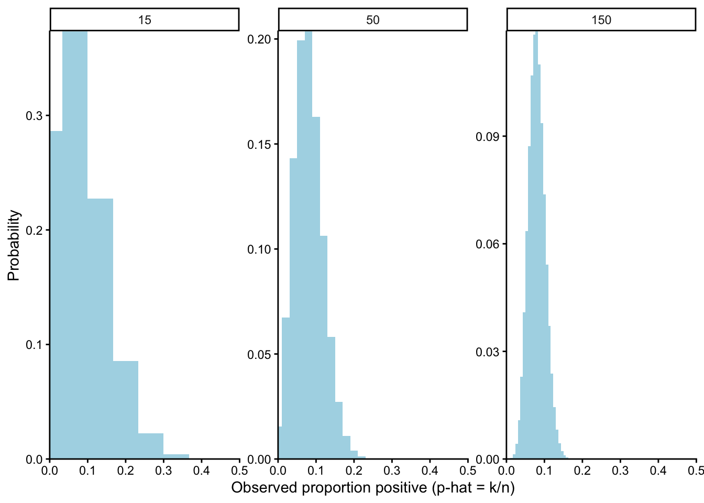
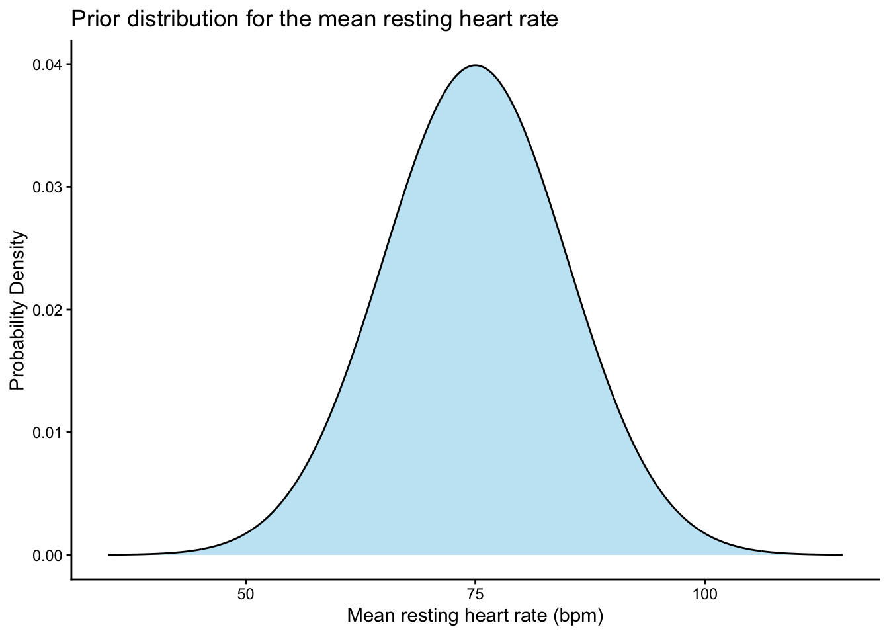
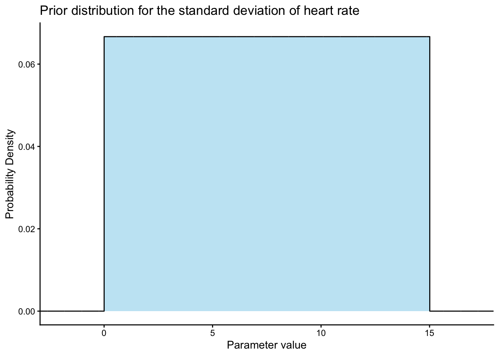
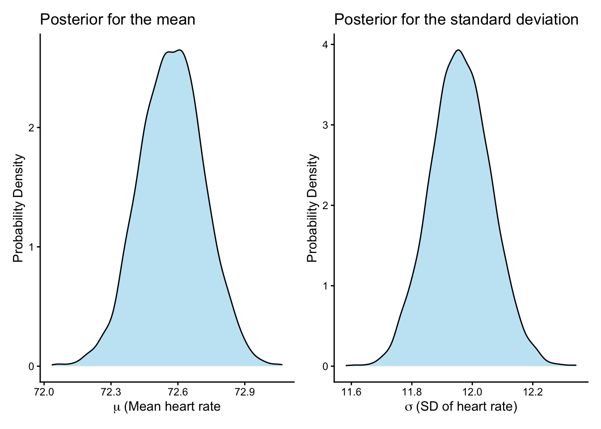
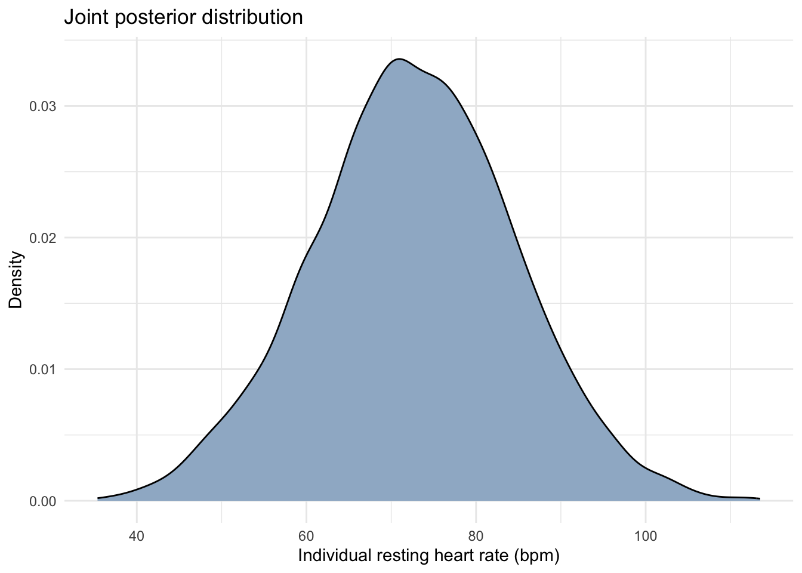

Chapter 7 Bayesian estimation and inference
With some basic probability rules under our belt, we turn our attention to the fundamental problem posed in the last chapter. Recall our goal was to estimate the prevalence of a disease in a community of 10,000. We’re particularly interested in knowing if the prevalence is greater than 10%, because that’s the threshold for triggering public health interventions. The population is too big to test everyone, and so a sample of 15 people were selected for testing, one of which tested positive, producing a frequentist estimate of _{infected} = 0.067. How good is this estimate, and how likely is it that the prevalence of the disease is truly less than 10%? This question implies that even though only 6.7% of the people I sampled were infected, it’s still possible that more than 10% of the population is infected. And this of course is the fundamental problem of statistics: when I sample populations, the quantities I want to know are estimated and uncertain. In this chapter, we look directly at how we can use samples to estimate a quantity and represent our uncertainty about that quantity with the language of probability.
7.1 Scientific workflow for the problem
In Chapter 2 I introduced a general workflow outlining how we will tackle scientific research questions, specifically how we will use the data we collect to provide insight into the questions we propose. Let’s remind ourselves of the steps of that workflow.
7.1.1 Theory and the research question
Our research question is “What proportion of people in the community are infected with a virus?” Although this question is descriptive in nature, there’s certainly theory from the fields of infectious disease and epidemiology that informs our understanding of how viral infection occurs, how it’s transmitted among people, and the approaches we can use to reliably test for infection. That theory is especially important for informing our causal assumptions about how the data are generated.
7.1.2 Generative model and estimand
A generative model describe how the data we observe are produced given our study design, and the estimand is the quantity or quantities we want to know. Having a simple descriptive research question, we can identify the estimand as the proportion of people infected with the virus. We’ve randomly sampled 15 people to test for the infection, which we would like to use to estimate the proportion infected. The generative model describes how the test results for samples of 15 people are produced. In other words, what are we assuming about the data generation process?
At this point we begin with a simple generative model, which I describe here as three assumptions:
We assume that we sample individuals randomly from the population and that the probability of each individual being infected is identical to the proportion of people infected in the population. This is likely a good assumption if the sampling is truly random. It wouldn’t be true if we sampled people who differed in some way from unsampled people in terms of disease risk. For example, if we relied on volunteers for testing, perhaps individuals who are vaccinated - being health consciousness - are more likely to participate in screening than individuals who are not vaccinated. But for now we assume truly random sampling.
We assume the test results are perfectly accurate. In other words, when someone is infected with the virus, we assume the probability they will test positive is 1: \(P(\text{positive result} | \text{infected} = 1)\). Similarly, when someone is not infected with the virus, we assume the probability that they will test negative is 1: \(P(\text{negative result} | \text{not infected} = 1)\).
We assume the test results for each individual are independent. That means the test result of one person sampled are causally unrelated to a test result of another person sampled.
7.1.2.1 Simulating synthetic data with a generative model
The neat thing about generative model is that we can use them to generate synthetic data. The process of generating synthetic data is called simulation. In this section I want to show you two ways you could simulate data from our generative model on test results for a viral infection.
First, the sample function provides a simple mechanism that can be
used to generate sample data based on particular assumptions. With this
function we can define the possible outcomes of the data (pos =
positive test, neg = negative test), the number of people we sample
for testing (N), and the probability of observing each outcome. In the
code below, we define p as the proportion of people infected, and
therefore according to our generative model, this is the probability of
seeing a positive test. If the test is not positive, it must be negative
(neg). We can generate data under any values of the parameters in the
model, and here I’ve assumed a sample of 15 people from a population
where 8% are infected:
set.seed(123)
N <- 15 #assumed sample size
p <- 0.08 #assumed proportion of population infected
sample(c("pos", "neg"), size = N, prob = c(p, 1-p), replace = TRUE)## [1] "neg" "neg" "neg" "neg" "pos" "neg" "neg" "neg" "neg" "neg" "pos" "neg"
## [13] "neg" "neg" "neg"We see that R returns a single set of 15 test results according to the
model, two being positive and thirteen being negative. So in this one
synthetic dataset, the proportion infected is 2/13 = 13.3%, which is
different from the true (assumed) proportion infected of 8%. This
difference is due to sampling error. We could simulate datasets like
this over and over to get a sense for the variation in the outcome due
to sampling error. Here I use the replicate function to simulate 1000
datasets with N = 15 and p = 0.08:
set.seed(123)
N <- 15 #assumed sample size
p <- 0.08 #assumed proportion of population infected
sims <- replicate(n = 1000,
sample(c("pos", "neg"), size = N,
prob = c(p, 1-p), replace = TRUE))
sims[,1:10] #print the first 10 samples of 15## [,1] [,2] [,3] [,4] [,5] [,6] [,7] [,8] [,9] [,10]
## [1,] "neg" "neg" "pos" "neg" "neg" "neg" "neg" "neg" "neg" "neg"
## [2,] "neg" "neg" "neg" "neg" "neg" "neg" "neg" "neg" "neg" "neg"
## [3,] "neg" "neg" "neg" "neg" "neg" "neg" "neg" "neg" "neg" "neg"
## [4,] "neg" "neg" "neg" "neg" "neg" "neg" "neg" "neg" "neg" "pos"
## [5,] "pos" "pos" "neg" "neg" "neg" "neg" "neg" "neg" "neg" "neg"
## [6,] "neg" "neg" "neg" "neg" "neg" "neg" "neg" "pos" "pos" "neg"
## [7,] "neg" "neg" "neg" "neg" "neg" "neg" "neg" "neg" "neg" "neg"
## [8,] "neg" "neg" "neg" "neg" "neg" "neg" "neg" "neg" "neg" "neg"
## [9,] "neg" "pos" "neg" "neg" "neg" "neg" "neg" "pos" "neg" "neg"
## [10,] "neg" "neg" "neg" "neg" "neg" "neg" "neg" "neg" "neg" "neg"
## [11,] "pos" "neg" "neg" "neg" "neg" "neg" "neg" "neg" "neg" "neg"
## [12,] "neg" "neg" "neg" "neg" "neg" "pos" "neg" "neg" "neg" "neg"
## [13,] "neg" "neg" "neg" "neg" "neg" "neg" "neg" "pos" "neg" "neg"
## [14,] "neg" "neg" "neg" "neg" "neg" "neg" "pos" "neg" "neg" "neg"
## [15,] "neg" "neg" "neg" "neg" "neg" "neg" "neg" "neg" "neg" "neg"I’ve printed the first 10 simulated datasets, with columns representing the simulation and rows repersenting the 15 outcomes in each simulation. We can see the first simulation has two positives, the second has one positive, the third has 0 positives, and so on. Let’s compute the frequency distribution of the number of positives across all 1000 simulated datasets:
## positives
## 0 1 2 3 4 6
## 314 368 214 89 13 2We see the most common outcomes are 0, 1, or 2 positives out of 15 when the true proportion infected is 0.08, with the probability of an increasing number of positives declining sharply as shown in the graph above. This makes sense given that we assumed the proportion infected in the population was only 8%. The figure below shows the distribution of outcomes across 1000 synthetic datasets when we assume a much larger prevalence of 30%. When the prevalence is 30%, it’s most likely to see three to six positives out of 15, more than what we expect when the prevalence is only 8%, but still quite variable due to sampling error.
A second way we can simulate data - and this will be the approach we use throughout the book - is to use probability distributions. This is one of the reasons we spent an entire chapter working with probability rules and distributions. Recall in the last chapter that we described the number of positives X out of out of n trials as a random variable following a binomial distribution. The binomial distribution makes the same assumptions that we articulated in our generative model, namely a constant probability of infection (implying random sampling and a perfectly accurate test) and independent observations. Indeed, we used the binomial distributiont o compute the probability of observing any number of positive tests out of 15, in that case when we assumed a prevalence of 5%. The graph below shows the binomial distribution of positive test results out of 15 when the prevalence is 8%:

We can also use the binomial distribution to simulate data. This can
be done with the rbinom function. Here I use the rbinom function to
simulate a single sample (n = 1) of 15 individuals size = 15 where
the probabability of success (infection) is 0.08:
## [1] 1The rbinom function returns the total number of “successes” (X),
which we define as positive test results, out of the 15. Just like the
sample function, we can simulate many datasets. The code below
produces 10 datasets of size 15:
## [1] 1 2 1 2 3 0 1 3 1 1We could of course do this 1000 times just like we did with the sample
function and compute the frequency distribution of the number of
positive results out of 15:
## sims
## 0 1 2 3 4 5 6
## 286 376 228 84 24 1 1We see a very similar distribution of positive results in comparison to
the sample function, which makes sense because the assumptions we made
in the sample function were the assumptions of the binomial
distribution. One of the nice things about using the probability
distribution directly, however, is that it gives us the exact
probability of each possible outcome given our assumptions.
The last thing I want to show you is that a generative model can give you insight into the quality of the data you can expect from your sampling design, specifically accuracy and precision. For example, assume the true prevalence is 8%, but we’re considering how many tests we should invest in to estimate the proportion infected. We can use the binomial distribution - our generative model - to look at how the sampling distribution changes with sample size. For example, suppose we want to evaluate the implications of sampling 15, 50, or 150 people. The figure below shows the probability of observing a particular proportion of positive test results based on each sample size:
set.seed(4)
p <- 0.08
ns <- c(15, 50, 150)
d <- do.call(rbind, lapply(ns, function(n){
k <- 0:n
phat <- k / n
data.frame(
n = factor(n, levels = ns),
phat = phat,
prob = dbinom(k, size = n, prob = p),
xmin = pmax(0, phat - 0.5/n),
xmax = pmin(1, phat + 0.5/n)
)
}))
ggplot(d) +
geom_rect(aes(xmin = xmin, xmax = xmax, ymin = 0, ymax = prob),
fill = "lightblue", color = NA) +
facet_wrap(~ n, nrow = 1, scales = "free_y") +
scale_x_continuous(limits = c(0, 0.5), expand = c(0, 0)) +
scale_y_continuous(expand = c(0, 0)) +
labs(
x = "Observed proportion positive (p-hat = k/n)",
y = "Probability"
) +
theme_classic()
You can see that as the number of individuals samples increases, the width of the sampling distribution decreases, meaning you can expect more precise estimates with larger sample sizes. Note that in each scenario, you can get an estimated prevalence of >10% even though the true prevalence is 5%, but the likelhood of that results decreases as sample size increases. Also note that sample size has no effect on accuracy, as each of the distributions is centered on the true prevalence that we assumed: 8%.
7.1.3 Statistical model and estimate
Whereas the generative model expresses our causal assumptions about how the data are estimated and can be used produce simulated datasets, the statistical model is what we use to estimate what we want to know in the target population. The statistical model needs to take the 15 test results we actually observe and use them to estimate the proportion infected in the population of 10,000. Remember we observed one person out of 15 tested positive, so you might be tempted to say that the estimate of the prevalence is simply \(\hat{p}_{infected} = \frac{1}{15}= 0.067\). And if you were strictly using a frequentist definition of probability, you would be correct. Frequentist estimates are point estimates, a single best estimate for the quantity we’re interested in. One problem with frequentist point estimates is that we can’t talk about them probabalitically. In other words, we can’t answer the question “What is the probability that the true prevalence of the infection in the population is 6.7%”. Nor can we talk about the probability of the prevalence taking on any other values. Remember that our main goal is to determine if the prevalence of the infection is above 10%, becuase that’s when interventions are triggered. In other words, we want to know “What is the probability that the infection prevalence is >10%?”. Frequentist point estimates can’t answer that question, but fortunately there is a solution, and that solution is to use a Bayesian interpretation of probabiglity. So in the remainder of this chapter, I will introduce you to Bayesian probability, and then show you how we can use Bayes to estimate quantities with statistical models.
7.2 Bayes Theorem
Step away from disease prevalence for a moment and consider medical screening tests. Medical screening tests are used to identify health issues in people before symptoms are present. In the 1980s the American Cancer Society started recommending annual or semi-annual mammograms for women beginning in middle age to look for breast cancer. In contrast to our toy example that assumes a perfect test for a viral infection, most medical testing is imperfect. There is some chance an individual will test negative when they truly have a disease (false negative), and there is some chance that an individual will test positive when they don’t have a disease (false positive).
Table @ref(tab:c07_t1) shows the joint and marginal probabilities for mammogram screening tests (Lehman et al. 2016). The joint probabilities are shown for test results (positive and negative) and disease status (does or does not have breast cancer). For example, we can see that 0.87% of individuals have breast cancer and test positive.
| Disease Status | Positive Test | Negative Test | Total |
|---|---|---|---|
| Breast Cancer | 0.0087 | 0.0013 | 0.01 |
| No Breast Cancer | 0.1089 | 0.8811 | 0.99 |
| Total | 0.1176 | 0.8824 | 1.00 |
How well does the test perform? From the joint probabilities in Table @ref(tab:c07_t1), we can quantify the probability of test outcomes conditional on disease status. For example, what is the probability the test will be positive when a person has the disease? This probability is known as the sensitivity of a test in medical research. We know from the rule of conditional probability that the sensitivity can be quantified as
\[ P(\text{Positive}|\text{Cancer}) = \frac{P(\text{Positive and Cancer})}{P(\text{Cancer})} \]
We can see in Table @ref(tab:c07_t1) that the joint probability of testing positive and having breast cancer is 0.0087, and the marginal probability of breast cancer is 0.01. Thus, the sensitivity of the test is
\[ P(\text{Positive}|\text{Cancer}) = \frac{0.0087}{0.01}=0.87 \]
In other words, when someone has breast cancer, they have a 0.87 probability of testing positive in a screening mammogram. This means they have a 0.13 probability of testing negative, so 0.13 is the false negative rate for the test.
How well does the test return a negative result when an individual doesn’t have breast cancer, an outcome referred to as specificity in medical research. Again, we can specify the conditional probability of interest as:
\[ P(\text{Negative}|\text{No Cancer}) = \frac{P(\text{ Negative and No Cancer})}{P(\text{No Cancer})} = \frac{0.8811}{0.99}=0.89 \]
We see the specificity is 0.89, meaning the probability of a false positive is 0.11.
Now as you might surmise, medical doctors are faced with a conundrum when interpreting the results of these kind of screening tests. Clearly we can see from the estimation of sensitivity and specificity that the screening test is imperfect. Sometimes it returns a positive for people who don’t have breast cancer, and sometimes it returns a negative for people who do have breast cancer. Doctors are well aware of this. Before approving medical tests for general use, regulatory agencies evaluate the performance of tests as measured by sensitivity and specificity (along with potential side effects), so these values are known by practitioners. The question we need to grapple with is how doctors should interpret the resutls of an imperfect screening test. What does a test result imply about the probability of actually having the disease?
When a routine mammography is performed on an individual, what information is known about that person with respect to the likelihood of having breast cancer? For screening tests on individuals without a family history of breast cancer, there is very little information to go on. In such cases, the probability of the individual having breast cancer might be estimated best by the prevalence of breast cancer among individuals who are screened. As we can see in Table @ref(tab:c07_t1), that’s the marginal probability of breast cancer which is 1%. In a Bayesian analysis, this marginal probability of breast cancer is the prior probability, namely the probability of the event of interest (having breast cancer) before we collect new data.
How does the probability of having breast cancer change when we learn new information, specifically the result of the mammography? Suppose a person has a positive test. What is the probability this person has breast cancer, given that they have a positive mammogrpahy? Some people would be tempted to say the probabilty is 87%, but that isn’t right. The probability 87% represented the probability of testing positive given a person has breast cancer. What we want is the reverse conditionality. What is the probability of having breast cancer, given the positive test result?
This is where Bayesian thinking becomes valuable. Thomas Bayes discovered that a conditional probability could be quantified (in part) from the reverse conditional probability. Consider the conditional probability of interest, which we can frame using our standard rule to quantify conditional probability:
\[ P(\text{Cancer}|\text{Positive Test}) = \frac{P(\text{Cancer and Positive Test})}{P(\text{Positive Test})} \]
Notice that the numerator is a joint probability. We know from the general multiplication rule that the joint probability of A and B is \(P(A|B)*P(B)\), which can be equivalently expressed as \(P(B|A)*P(A)\). Bayes showed this rearrangement and expressed the conditional probability in the following way, which is known as Bayes Theorem:
\[ P(\text{A}|\text{B}) = \frac{P(\text{B|A})*P(\text{A})}{P(\text{B})} \]
Applying Bayes Theorem to the breast cancer example, the probability of breast cancer given a positive test becomes:
\[ P(\text{Cancer}|\text{Positive Test}) = \frac{P(\text{Positive Test|Cancer})*P(\text{Cancer})}{P(\text{Positive Test})} \]
All we have done here is re-expressed the joint probability of breast cancer and positive test result as the sensitivity of the test (probability of true positive) and the prevalence of the disease. This is an important insight because those probabilities are generally more intuitive than joint probabilities (the probability of randomly selecting an individual who jointly has breast cancer and tests positive).
Given this conceptual background on Bayes Theorem, let’s now compute the probability that the medical wants to know, namely the probability of having breast cancer given a positive test result:
\[ P(\text{Cancer}|\text{Positive Test}) = \frac{P(\text{Positive Test|Cancer})*P(\text{Cancer})}{P(\text{Positive Test})}=\frac{0.87*0.01}{0.1176}=0.074 \]
To most people this is a surprising result! In the case of a standard screening test for breast cancer, the probability of actually having breast cancer given a positive test is only 7.4%. Let’s be clear about the logic logic of our approach. First, before we had any new information from the mammogram, we stated the prior probability of an individual having breast cancer is 1%. That’s simply the prevalence of the disease among those who are being screened for breast cancer. Bayesian inference takes that prior knowledge and updates it with new information, namely the result of the test. Given the new information of a positive test, the updated probability of breast cancer increases to 7.4%. This updated probability, conditional on the new data, is called the posterior probability. This is the essence of Bayesian inference: start with your prior knowledge expressed as a prior probability, and update it based on new data.
Why is the probability of breast cancer conditional on a positive test so low? Bayes Theorem makes this clear. Although the sensitivity and specificity of mammograms are quite high, the mammogram is not a perfect test. Some of the positive tests are true positives, and some are false positives. What Bayes Theorem shows us is that we have to take into consideration the facts that 1) the prevalence of breast cancer is relatively low at 1%, and 2) only a portion of the positive test results are true positives. The numerator of Bayes Theorem gives us the proportion of individuals with breast cancer and positive tests, and then we divide by the total probability of positive tests to arrive at the proportion of positive tests that are true cases of breast cancer. More intuitively, Bayes Theorem tells us that because the prevalence of breast cancer is low and the mammogram produces false positives, the vast majority of the positive test results are actually coming from people who don’t have breast cancer.
This particular application of Bayes Theorem demonstrates how a low base rate - or prevalence - of a disease significantly influences the conditional probability of having the disease based on a test result. Even when sensitivity is high, low prevalence of the disease means that positive tests from screening programs are mostly false positives. This is known in the medical literature as the base rate fallacy, in which practitioners mistakenly believe high sensitivity implies high likelihood of a disease for a positive test.
A critical assumption in the example to this point is that we don’t know anything about the person being tested with respect to their likelihood of having the disease. That’s why the prevalence of the disease was used as the prior knowledge, which implies that individuals were being tested at random. Had the test been motivated by particular symptoms, we would want to revise the prior probability to reflect that knowledge.
For example, imagine a patient has symptoms that raises the suspicion of breast cancer to 50%. We can easily update our computation based on this information. If the probability of breast cancer for this individual (prior to testing) is 50%, then the probability of not having breast cancer is also 50%, and the total probability of a positive test is
\[ \begin{aligned}P(\text{Positive}) &= P(\text{Positive}\mid \text{Cancer})\,P(\text{Cancer})+ P(\text{Positive}\mid \text{No Cancer})\,P(\text{No Cancer}) \\P(\text{Positive}) &= 0.87(0.5) + 0.11(0.5) = 0.435 + 0.055 = 0.49\end{aligned} \]
Now we update our computation of the conditional probability of having the disease based on a positive test:
\[ P(\text{Cancer}|\text{Positive Test}) = \frac{P(\text{Positive Test|Cancer})*P(\text{Cancer})}{P(\text{Positive Test})}=\frac{0.87*0.50}{0.49}=0.89 \]
We see, unsurprisingly, that when symptoms raised our suspicion of breast cancer to a coin flip, the probability of breast cancer given a positive test is now 89%. This dramatic change illustrates how prior knowledge - expressed quantitatively as the prior probability - can have a dramatic impact on how we interpret the results of new evidence.
Broadly speaking, the example above highlights how Bayesian inference incorporates prior knowledge and new data to estimate quantities of interest. Whether you are a doctor interpreting test results or a scientist testing a hypothesis, Bayes Theorem allows us to specify our initial assumptions based on prior knowledge and update our beliefs with new empirical evidence.
7.3 Applying Bayes Theorem to statistical analysis
In the context of statistical analysis, we can think about Bayesian inference as allowing us to estimate quantities that represent a scientific hypothesis by combining our prior knowledge about the hypothesis with new data from a study:
\[ P(\text{Hypothesis}|\text{Data}) = \frac{P(\text{Data|Hypothesis})*P(\text{Hypothesis})}{P(\text{Data})} \]
There are four key parts of Bayes Theorem being represented here:
- Prior probability, \(P(Hypothesis)\): Quantitative statement of your degree of belief about the hypothesis prior to collecting new data.
- Likelihood, \(P(Data|Hypothesis)\): Probability of new data you observe given that a hypothesis is true.
- Total probability of the data, \(P(Data)\): The overall probability of the data integrated across all possible hypotheses. This is quantified using the total law of probability, where P(Data) represents a weighted average of the data, weighing the probability the data in accordance to the prior probability of each possible hypothesis. This is sometimes called the marginal likelihood (as it is a marginal probability integrated across hypotheses) or the average probability of the data (as it is a weighted average). Sometimes it is simply called the evidence. We won’t dwell on this component too much, as it more or less provides a mathematical purpose for us of standardizing the posterior probability such that it integrates to one.
- Posterior probability, \(P(Hypothesis | Data)\): This is our updated probability of the hypothesis given the new data.
This is fundamentally different than frequentist inference, where the P-value for a single null hypothesis represents the probability of data (or more extreme values) given the null hypothesis is true. We use that information as part of hte likelihood, but critically, we combine the likelihood with our prior (\(P(Hypothesis\))) to compute the conditional probability that we are actually interested in, namely the posterior probability of the hypothesis given the data.
Remember the whole point of science is to evaluate ideas with empirical data. We’ve defined the estimand as the (unknown) quantity that we want to estimate in the target population. It’s the quantity that will provide insight into the research question. So rather than referring to a verbal “Hypothesis” in Bayes theorem, instead we make it entirely quantitative by representing different hypotheses as different values of the estimand, which we denote \(\theta\). Making this substitution, Bayes theorem can be stated as
\[ P(\theta|\text{Data}) = \frac{P(\text{Data}|\theta)*P(\theta)}{P(\text{Data})} \]
For example, if we want to compare the difference in the mean number of fish between polluted and unpolluted areas in a lake, then \(\theta\) could represent the difference between the means in polluted and unpolluted areas, which could take on any real value. Bayes theorem provides a method for leverating our prior knowledge and new data to compute the probaiblity that the difference in the means takes on any of those values. In other words, we can compute the posterior probability that the difference in means takes on any value, such that teh posterior probability is an entire distribution of parameter values. In Bayesian inference we can use the posterior probability distribtion to reason probabilistically about hypotheses comparing the probability of parameter values that represent different hypotheses. For example, if the estimand is the the difference in mean fish between polluted and unpolluted areas computed as \(\mu_{unpolluted} - \mu_{polluted}\), we can compare the probability that the difference is positive - values that represent fish abundance being greater in unpolluted areas - to the probability that the difference is negative - values that represent fish abundance being greater in polluted areas.
7.4 Steps of estimation with Bayesian inference
In the remainder of this chapter we will apply Bayesian inference to estimate the prevalence of a viral infection when we randomly sample N = 15 people for testing. Before we take a look at each step of Bayesian estimation, it is worth emphasizing that the estimates produced by Bayesian inference are entire distributions. This is in stark contrast to frequentist estimation, which produces a point estimate of the parameter of interest. For example, recall that we found 1 positive tests out of N = 15 randomly sampled individuals. The frequentist estimate of the proportion infected is simply
\[ \hat{p}_{infected}=\frac{1}{15}=0.067 \]We know that a proportion can take on any value continuously distributed between (and inclusive of) 0 and 1, but frequentist estimation effectively arrives at a single value. The output of a Bayesian analysis is the posterior distribution, which is a probability distribution for estimand. The posterior probability distribution is the estimate in Bayesian inference, and because of this fact, we can evaluate the probability of any value the parameter might take on. And that’s exactly what we need! Remember how public health interventions will be implemented if the prevalence of the disease is greater than 10%. Bayesian inference will let us compute the probability that the prevalence is >10%. Let’s take a look at the steps of Bayesian estimation:
7.4.1 Specify the prior distribution
The first thing to do in a Bayesian analysis is to specify the prior distribution for the parameters being estimated. In our example, we have only a single parameter: the proportion of people infected. The goal here is to represent our prior knowledge about the parameter values by probability distributions. This can be a complicated task, and in this book I will present only a surface level treatment of specifying prior distributions. For now, we will start with the simplest possible prior distribution, the uninformative prior.
Uninformative priors represent a situation where you no prior knowledge about the parameters of interest. For parameters like proportions that have a bounded range (between 0 and 1), the most common way of specifying an uninformative prior is with the uniform distribution. The uniform distribution simply says that the probability density of all values X between values a and b are identical (\(X\sim \text{Uniform}(a, b)\). Because we are working with a proportion, we would say the prior probability of the proportion infected follows a uniform distribution between 0 and 1:
\[ p_{infected}\sim \text{Uniform}(0, 1) \]
In R we can compute the uniform distribution with the dunif function.
Before we do so, however, we need to select a set of parameter values at
which we will compute the prior distribution, and ultimately the
posterior distribution. The problem of course is that there’s an
infinite number of possible parameter values, even in cases like ours
where the parameter is bounded between a minimum and maximum. Because of
this, we proceed with an approximation of the prior and posterior
distributions by selecting a set of values that covers the plausible
range of the posterior distribution. This method is called grid
approximation. In this example, I will create a grid of possible
values for the proportion infected from 0 to 1 by every 0.01 units and
call it p.grid.
The resolution of the grid trades off completeness of the probability distribution with computational efficiency. In other words, if the grid is sparse (e.g., every 0.1 units), the computation is equite efficient, but the resulting probability distributions will not be approximated precisely. If the grid is too dense (e.g., every 0.0000001 units), the probability distributions will be very precise but might take a long time to compute. By specifying a resolution of 0.01 units, I’m trying to balance precision with computational efficiency.
Once the grid of possible values of the parameter is created, the
dunif function is used to compute the prior probability distribution,
p.prior.
(#fig:c07_f1)Uniform prior distribution of the proportion infected.
We see in Figure @ref(fig:c07_f1) that the prior probability distribution for the prevalence is completely flat. Indeed, the uniform prior is often called a flat prior. Because the the probability density is identical at all values of the proportion infected, this prior does a good job of representing our complete lack of prior knowledge.
7.4.2 Quantify the likelihood of the data
Once the prior distribution is specified, we can go ahead and compute the likelihood, which is the probability of the data for each possible value of the parameter. Recall that we observed 1 positive out of 15 tests. The likelihood is simply the probability of this specific observation under different values of prevalence. Earlier we talked about how we can compute these probabilities with the binomial distribution, which makes the same assumptions as our generative model. For example, what’s the probability of 1 out of 15 positive tests when the prevalence of the infection is 0?
## [1] 0We see the probability of 1 out of 15 positives is 0 when the true prevalence is 0. That makes sense! If the disease does not occur at all, then no one should be infected. But that’s just one possible value of the prevalence. Let’s take a look at the next possible value in the grid, where the prevalence is 0.01:
## [1] 0.1303119So when the infection prevalence is 1%, there’s a 13% chance of
observing 1 out of 15 positives. Ultimately we need to go ahead and
compute these likelihoods for every value of prevalence in the grid. We
can do this by specifying our grid of values, p.grid as the prob
argument in the dbinom function, saving the output as lik in our
dataframe d.
(#fig:c07_f2)Likelihood distribution showing the probability of the observed data (1 out of 15 positive tests) conditional on each value of the prevalence of infection.
Figure @ref(fig:c07_f2) shows the likelihood distribution. Each point in the graph shows the likelihood of the observed data for each value of proportion infected in the grid. We can clearly see that the observed data are most likely when the proportion infected is around 0-25%. But keep in mind that the likelihood is not the distribution we ultimately want. These are the probabilities of the observed data conditional on each value of the prevalence. What we really want is the posterior probability of the prevalence conditional on the data. But before we can compute that, we just need one more step.
7.4.3 Quantify the total probability of the data (marginal likelihood)
The last step before computing the posterior distribution is to quantify the marginal likelihood, which the total probability of the data. Using the total law of probability, we need to take the product of the likelihood (the probability of the observed data conditional on each value of the prevalence) and the prior probability of each value of the parameter, then sum those values up.
Again, the marginal likelihood isn’t very interesting on its own. We compute it so that we can standardize the posterior distribution, making it integrate to 1.
7.4.4 Quantify the posterior distribution
Finally we are ready to compute the posterior probability distribution, namely the probability of each possible value of the prevalence given the data we observed. All we need to do here is apply Bayes Theorem:
(#fig:c07_f3)Posterior probability distribution for the infection prevalence conditional on the observed data (1 out of 15 positives).
There we have it. Figure @ref(fig:c07_f3) shows the posterior distribution of the infection prevalence. From the posterior distribution we clearly see that some values of the proportion infected are more likely than other. We will formally examine how we can describe the posterior distribution in more detail shortly, but for now, consider just to summaries. For example, what is the most plausible value for the infection prevalence? We can extract the maximum value from the posterior:
## p.grid prior lik marg.lik posterior
## 8 0.07 1 0.3801461 0.3801461 0.06094516The value of the parameter with the maximum posterior probability is
called the maximum a posteriori (MAP) value, and it is one of the
simplest values used to describe the posterior distribution with a
single point value. In this case, we see the MAP for the prevalence is
7% (p.grid). That happens to be the point estimate for the frequentist
estimate (rounded from 0.067 because of the finite nature of our grid),
but the symmetry here is only because we used a completely uninformative
prior. Indeed, in simple problems of estimation, the frequentist point
estimate and Bayesian MAP are often the same when using an uninformative
prior. But as we will soon see, there is rarely a reason to use a
completely uninformative prior.
Moreover, even when we use an uninformative prior, we can do so much more with the Bayesian analysis compared to frequentist estimation. Recall that our primary interest in estimating the prevalence of the disease was to determine if the prevalence is greater than 10%, because that’s the threshold where public health interventions would be triggered. We saw with frequentist inference that we can’t easily specify a null hypothesis that encompasses multiple values of the parameter. But with Bayesian inference, we can quantify exactly what we want. Let’s go ahead and compute the probability that the prevalence of the infection is greater than 10%:
## [1] 0.4885063Here we see that there’s a 48.9% chance that the prevalence is greater than 10%. That of course means there’s a 51.1% chance that the prevalence is 10% or less. In other words, based in our prior knowledge and the new data we collected (the 15 test results), the it’s basically a 50/50 coin flip on whether the prevalence is above the threshold for triggering interventions. That is exactly the kind of information public health officials would want to consider as part of their decision making.
7.4.4.1 Using a more informative prior
Now let’s approach the same estimation problem but with a more informative prior. Suppose you had very good reason to believe that the prevalence of the infection was no greater than 15%. For example, perhaps you know the infection was very recently introduced to the area from someone who recently returned from travel in another area where the disease is common. Or perhaps you know from others areas that the prevalence has never been observed to be above 15%. And suppose you also know of at least one case in the population, such that the prevalence can’t be 0.
We can go ahead and specify the prior as \(p_{infected}\sim \text{Uniform}(0.001, 0.15)\), which says that all values of the prevalence from 0.001 to 0.15 are equally likely, and that all values outside of that range are impossible. Let’s create the grid and visualize the prior:
(#fig:c07_f4)Uniform prior distribution of the proportion infected ruling out values above 15% prevalence.
Figure @ref(fig:c07_f4) shows the expected prior distribution, with uniform probability from 0 to 0.15 and all other values being plausible. Now we can combine this prior with the data and compute the posterior distribution:

(#fig:c07_f5)Revised posterior probability distribution for the infection prevalence conditional on the observed data when using a uniform prior from 0 to 15%.
We see here a slight difference in the posterior distribution. Graphically the most likely value still appears to be 0.07, but let’s re-quantify the probabilty that the prevalence is greater than 10%:
## [1] 0.302917Not surprisingly the posterior probability of the prevalence being greater than 10% is now a bit lower at 30%, much lower than when we used an uninformative prior. Thus, the shape of the prior probability distribution - representing our prior knowledge of the system - can play a very important role in shaping the estimate as expressed by the posterior distribution.
7.5 Summarizing the posterior distribution
How should we summarize the posterior distributions? We have already seen two approaches, specifically the MAP and an interval of probability mass (\(p>0.1\))). Because posterior distributions are simply probability distributions, we can describe them with any of the tools we’ve used to describe probability distributions. We can describe the central tendency of the posterior by quantifying the mean, median, or mode (which is the MAP), and we can describe variation by metrics that quantify the width of the posterior distribution. The central tendency will give us a look at the most likely values of the parameter given the data, whereas variation will give us a sense of uncertainty. Wider posterior distributions imply more uncertainty about the parameter value.
7.5.1 Sampling from the posterior distribution
How do we quantify descriptive metrics of the posterior distribution, such as the mean? Given the simplicity of the research problem in this chapter, we could quantify the mean directly from the posterior by weighing each value i of the prevalence from the grid by its posterior probability (i.e, \(\sum p_{i}P(p_{i})\). But posterior distributions will rarely be this simple, and so we need a more general approach.
The more general approach we’ll use to summarize posterior distributions in the rest of the book is to take many samples from the posterior distribution. For example, let’s take 1000 samples of the prevalence values from the posterior distribution. For each draw from the posterior, we will specify that the probability of a particular value of the prevalence being selected is equal to its posterior probability. This is much like drawing marbles from an urn. Imagine the marbles have values of the prevalence printed on them. Some are 0.01, some 0.02, 0.03, etc. Based on the posterior distribution we’ve estimated, there will be more marbles with 0.07 (which is the MAP) than 0.05, or 0.12, so it’s more likely to select a marble with 0.07 than other values on each particular draw.
Let’s use the sample function to draw 1000 values, and then plot a
histogram of the results:
set.seed(123)
#extract 1000 samples from the posterior distribution
p.samples <- sample(d$p.grid, prob=d$posterior, size=1000, replace=TRUE)
p.samples <- as.data.frame(p.samples)
ggplot(p.samples, aes(x = p.samples)) +
geom_histogram(aes(y = after_stat(density)), binwidth = 0.01,
color = "black", fill = "lightblue", alpha = 0.5) +
geom_density(color = "red", size = 1) +
scale_y_continuous(name = "Probability Density",
sec.axis = sec_axis(~ . * nrow(p.samples) * 0.01, name = "Frequency")) +
labs(x = "Infection prevalence") +
theme_classic()(#fig:c07_f6)Histogram and overlaid probability density for 1000 sampled values of prevlaence from the posterior distribution.
We can see the most likely values of the prevalence among the sampled values are 0.05-0.10, and no values below 0.01 or above 0.15 were selected. This makes sense based on the posterior distribution, which peaked at 0.07 and had very low probability at 0 and above 0.15. Now that we have these samples, we can use them to easily quantify numeric values summarizing the posterior distribution.
7.5.2 Central tendency and variance
Let’s start by computing the posterior mean and median:
## [1] 0.08157## [1] 0.08The posterior mean is 8.2%, whereas the posterior median is 8%. These aren’t too different, which isn’t surprising given that the bell shape of the posterior distribution in this case.
In addition to metrics of central tendency, we can also quantify metrics of spread, which sheds light on uncertainty. The most typical metric of spread for the posterior distribution is the standard deviation:
## [1] 0.03877549The standard deviation of the posterior distribution reflects uncertainty about the parameter in light of the prior and the data. Bigger values of the standard deviation mean more spread in the probability distribution across possible values of the estimand, which means more uncertainty. Conversely, smaller values of the standard deviation imply less uncertainty.
7.5.3 Intervals
Although single values like the posterior mean or median can be helpful (and are often reported in the literature), it can be helpful and more informative identify an interval of plausible values for the the parameter. Indeed, we’ve already seen one interval from the posterior, specifically the probability that the prevalence is greater than 10%. We can easily compute this from the posterior samples too:
## [1] 0.306Here we are simply asking which values of p.samples are greater than
0.1, which R specifies logically as TRUE or FALSE, and then we return
the proportion by applying the mean function (because R treats TRUE
as 1 and FALSE as 0), which R are greater th summing up the number of
samples that are greater than 0.1 .Here we get a a value very close to
what we saw before.
We can also quantify intervals that describe the probability of the
parameter value falling between two points. In Bayesian estimation these
intervals are often called credible intervals. Let’s quantify a 90%
credible interval. This is straightforward by using the quantile
function. For a 90% credible interval, the lower boundary would be the
value of prevalence for which 5% of the probability mass falls below the
value, and the upper boundary is the value for which 5% of the
probability mass lies above the value.
## 5% 95%
## 0.02 0.15The interpretation here is that there’s a 90% probability that the true prevalence is between 2% and 15%. How about a 98% credible interval?
## 1% 99%
## 0.01 0.15We conclude there is a 98% probability that the true prevalence is between 1 and 15%. Note that as you increase the degree of credibility in an interval, the interval becomes wider. Converseely, when you decrease the degree of credibility, that interval narrows. That should make sense intuitively. At its extreme, a 100% credibility interval must include all the possible values of the estimand.
7.6 Specifying priors
Arguably the most difficult part of Bayesian analysis is selecting the priors. We have seen that the choice of prior distribution influences the posterior estimate. In our example the difference was only slight, but this will not always be the case. For example, suppose we had specified a uniform prior for the prevalence between 50% and 100%. That prior says any values below 50% are impossible, and so even though the data indicate values around 8% are most likely, those values would not be plausible in the posterior distribution.
In this book we will almost never use completely uninformative priors, precisely because we rarely conduct a study with no prior knowledge. At the same time, we will almost never use strongly informative priors that could ultimately stack the deck against the data we observe. More often than not, we’ll use priors that are weakly informative, or what we’ll call regularizing priors. These priors will generally not stack the deck in one particular direction when testing a hypothesis about a particular effect. For example, if we were testing whether a vaccine reduces the prevalence of an infection, we generally wouldn’t use a prior that makes it more likely that the vaccine reduces the prevalence than having no effect at all. Instead, we will generally use priors that rule out values that we are confident are quite implausible.
For example, suppose the disease we’re working with to generate a vaccine is known to evolve rapidly. The particular strains change from year to year, and so we wouldn’t expect a vaccine to be 100% effective. In this case, we could specify a prior distribution that makes it very unlikely (or potentially impossible) that the effectiveness is 100%.
Consider another example. Suppose you are estimating the average height of people in your community. We have a lot of prior knowledge about human height. You know there are many 10-foot adults walking around, for example. We can specify a prior for the mean that is centered around typical values of mean height in other communities (perhaps in the 4-6 ft range) and that makes values outside of that range very unlikely.
How do we specify priors? We use probability distributions. We’ve already seen this for the infection prevalence example. We specified uniform prior distributions for prevalence. But we aren’t limited to a uniform prior. We could have specified a prior distribution that makes some value of the proportion more likely than others. One possibility is the normal distribution, which is particularly useful for parameters that can be positive or negative. In the height example, we might specify a normal prior distribution for the mean height with a mean of 68 inches and a standard deviation of 2 inches. This would effectively say that our prior knowledge leads us to believe that the mean height is most likely (indeed, about 95% likely) between 64 and 72 inches. We’ll use normal priors in following chapters.
For proportions, which is our focus in this chapter, a particularly valuable probability distribution is the beta distribution, which is a continuous probability distribution constrained to values between 0 and 1. In fact the values 0 and 1 are excluded in the beta distribution, so this is a really handy distribution when we want to exclude the two extremes of a proportion that we know are unreasonable.
The beta distribution has two parameters, \(\alpha\) and \(\beta\), that control the shape of the distribution. In statistical notation we indicate a random variable X follows a beta distribution as
\[ X \sim Beta(\alpha, \beta) \]
The beta probability density for different values of the proportion can
be quantified with the dbeta function. Figure @ref(fig:c07_f7) shows
three examples of how the shape of the beta distribution changes with
\(\alpha\) and \(\beta\). The shape parameters don’t control the
distribution in a simple way, and so it is advisable to play around with
the values before settling on a particularity prior distribution. There
are useful
applications on the
web that allow you to visualize the beta distribution while changing the
shape parameters with a slider.
(#fig:c07_f7)Example beta distributions with varying parameters alpha and beta.
Let’s apply a beta prior to the infection prevalence example. Let’s assume we are very confident the infection prevalence is most likely 1-10% but and very unlikely to be above 20%. We’ll specify the following beta distribution for the prevalence: \(p_{infected} \sim Beta(2.5, 30)\). Let’s first visualize this particular beta distribution to confirm it’s doing what we want:
#create a grid of values at which to evaluate the parameter
p.grid <- seq(from = 0, to = 1, by = 0.01)
#compute the beta priorfrom 0 to 0.2
prior <- dbeta(x = p.grid, shape1=2.5, shape2 =30)
#combine to df
d <- cbind.data.frame(p.grid, prior)
# Plot the beta prior distribution
ggplot(d, aes(x = p.grid, y = prior)) +
geom_point(size = 1) +
geom_line() +
ylim(0, max(d$prior)) +
labs(x = "Proportion infected", y = "Probability density") +
theme_classic()
(#fig:c07_f8)Prior distribution of prevalence specified as a beta distribution with alpha = 2.5 and beta = 30
Looks good! We can see this prior distribution says that the most likely value of prevalence is 5%, and that 0% and values above 25% are basically implausible. Now we continue by computing the likelihood, marginal likelihood, and posterior distribution:

(#fig:c07_f9)Posterior distribution of the infection prevalence when using a beta prior distribution.
For comparison, let’s compute the MAP and the probability that the prevalence is greater than 10% based on this posterior
## p.grid prior lik marg.lik posterior
## 7 0.06 9.630747 0.3784709 31.55932 0.1154954## [1] 0.1860338Here we see the most plausible value of prevalence is 6%, and the probability that the prevalence is greater than 10% is now only 19%. This reflects our prior information that the infection is in the community (not 0%) but is most likely around 5% and not greater than 25%, combined with the new data which has a maximum likelihood value at 7%. Thus, the posterior distribution is slightly shifted to higher values than our prior. This is the essence of Bayesian analysis. You come into the analysis with prior knowledge, and you update that prior knowledge with new data, and express your updated view as a posterior distribution. The key is to have a good rationale for how you express the prior distribution. If it were plausible that the prevalence is above 25%, the prior we just used would not be a good choice!
7.7 Decision making
How do we make decisions about hypotheses? In Bayesian inference, the estimate is the entire posterior distribution representing the probability that the estimand takes on any particular value. As we just saw, this allows you to quantify the direct probabilities that are of interest based on the research question. For example, if you are testing the hpyothesis that pollution reduces fish abundance, you might estimate the effect by quantifying the posterior distribution for the difference in abundance between polluted and unpolluted areas. Suppose the estimate is the difference in mean abundance, specified as the mean unpolluted abundance minus the mean polluted abundance. You can use the posterior distribution to directly quantify the probability that the difference in means is a positive value. You might conclude something like, “there was a 91% probability that the mean abundance was greater in unpolluted than polluted areas”.
The bottom line is that decision making with Bayesian inference is less about “yes” or “no” and more about evaluating hypotheses - as represented by values of the estimand - with probability, which directly represents our uncertainty. Some might find the absence of firm, binary decisions to be inconvenient, but one should remember that in science there is no certainty. There is only uncertainty, and we should quantify it. Bayesian inference allows us to quantify uncertainty about hypotheses, represented as parameter values, directly.
7.8 Specifying and fitting statistical models with Bayes
For the remainder of this book, we will approach Bayesian data analysis by first specifying the statistical notation for our model, and then by fitting the model with R. Let’s take a look at those two components.
7.8.1 Statistical model specification
Once we have a generative model, a study design, and estimands clearly defined, we can define a statistical model for the data and use it to estimate the estimands. As we just saw, Bayesian estimation of parameters in statistical models requires three components: 1) the likelihood, 2) the prior(s), and 3) the marginal likelihood. The marginal likelihood is a numerical necessity to standardize the posterior distribution, and it is computed based on the likelihood and prior, so when defining statistical models for Bayesian estimation, we focus our efforts on defining the likelihood and prior. Fitting a statistical model requires specifying the model mathematically, and we will use a particular notation to do so.
Consider our infection prevalence example. Using the more informative prior, we can define the statistical model in this way:
\[ I \sim Binomial(N, p) \\ p \sim Beta(2.5, 30) \]
What do these lines represent? The first line is the likelihood and communicates our assumptions about how the observed data are produced based on the generative model. It says the observed number of infections (\(I\)) follow a binomial distribution with N tests and a constant probability of being infected, p. The probability of being infected, p, is the estimand - the parameter of interest - and what we need to estimate with the observed data, I and N. The tilde (~) specifies that the observed number of infections is a stochastic outcome, which just means that the observed number of infections is probabilistic rather than determined with certainty. Indeed, as we’ve defined the model, \(I\) is a random variable described by a binomial distribution.
The second line defines the prior distribution, which is just our mathematical way of describing our prior knowledge about the parameter. It says we assume the probability of infection follows a beta distribution with shape parameters \(\alpha = 2.5\) and \(\beta = 30\). When we looked at this beta distribution, we saw that it reflects our prior belief that the prevalence is most likely around 5% and very unlikely to be 0% or >20%.
Every statistical model we define for Bayesian estimation requires these two components, the likelihood and prior distribution. The likelihood includes observed variables (the data) and unobserved parameters (the quantities we need to estimate) and described how the observed data are generated. In contrast the prior distributions describe our prior knowledge for each unobserved parameter.
Some statistical models are quite simple. Indeed, or model of infection prevalence has only a single parameter, and it happens to be the estimand. Other models will have multiple parameters, not all of which are necessarily of direct interest. Every unknown parameter requires a prior distribution, whether you are interested in the parameter or now. So when we fit more complicated models with multiple parameters, you’ll want to make sure that there’s a prior distribution specified for each parameter. We’ll see an example like that shortly.
7.8.2 Fitting models with brms
Moving forward we will use the brms package in R to fit models with Bayesian inference. Although we could continue to fit some models with grid approximation as we have this chapter, grid approximation becomes very cumbersome and computationally intensive when fitting complex models with multiple parameters.
There are different types of methods to fit approximations of posterior distributions, and a method called Markov chain Monte Carlo (MCMC) is by far the most common, and the method that brms uses. We will not get into technical details on how MCMC works, but at a high level, MCMC is similar to the sampling approach you’ve seen with grid approximation. However, instead of evaluating pre-specified values for parameters on a grid, MCMC uses an mathematical algorithm to explore possible values for the parameters (i.e., the parameter space) and hone in on the most likely values for the parameters.
MCMC works by generating a single sample of parameter values at a time, where each new sample depends on the previous samples (a Markov process). A sequence of samples is called a chain. You can think of a chain like a random walk. The chain explores parameter space, and each sample depends on the parameter space explored in the previous sample, but over a long enough run of samples, the parameter space at the end of the chain can be very different from the start. Ultimately the goal is to run chains long enough such that the parameter space converges to a consistent area where the true posterior distribution is found. So when we fit models in brms with MCMC, we will need to use specific metrics to evaluate whether the chains converged. When the model converges, we will use the samples generated to describe the posterior distribution, much like we did when we sampled from our grid approximation of the posterior.
So how do we fit our model of infection prevalence with MCMC in brms? Let’s take a look:
library(brms)
#organize data
x <- 1
n <- 15
d <- list(x = x, n = n)
#specify model formula
m.formula <- bf(x | trials(n) ~ 1,
family = binomial(link="identity"))
#specify priors
m.prior <- prior(beta(2.5, 30), class = "Intercept", lb=0, ub=1)
#simulate the priors
m <- brm(data = d,
formula = m.formula,
prior = m.prior,
refresh = 0)
print(m)## Family: binomial
## Links: mu = identity
## Formula: x | trials(n) ~ 1
## Data: d (Number of observations: 1)
## Draws: 4 chains, each with iter = 2000; warmup = 1000; thin = 1;
## total post-warmup draws = 4000
##
## Regression Coefficients:
## Estimate Est.Error l-95% CI u-95% CI Rhat Bulk_ESS Tail_ESS
## Intercept 0.07 0.04 0.02 0.17 1.00 1098 1281
##
## Draws were sampled using sampling(NUTS). For each parameter, Bulk_ESS
## and Tail_ESS are effective sample size measures, and Rhat is the potential
## scale reduction factor on split chains (at convergence, Rhat = 1).The main steps here are to organize the data (usually in a list or data
frame), specify the model formula, specify the priors, and then fit the
models. The model formula is defined with the bf formula, and it
specifies the systematic part of the model, namely how the data and
parameters are related to each other. In this case we define x
successes out of n trials as a function of (~) the parameter.
Specifying 1 for the parameter simply means the data are a function of
a single parameter that will be referred to as the Intercept. In this
particular example, the Intercept will represent the proportion
infected. The second part of the formula specifies the family, which
is probability distribution for the response variable. In this case the
family is the binomial distribution. Each probability distribution as a
link function. Specifying identity link for a binomial distribution
makes the ’Intercept` represent a probability.
The prior function defines the a prior for a particular parameter.
Because there is only a single parameter, we have only a single
parameter to define. The prior function requires a particular
probability distribution to describe the prior, in this case a beta
distribution with its two parameters. We then specify the class, which
is the type of parameter for which we are defining a prior. As
mentioned, the parameter in this case is denoted the Intercept. W
Finally the brm function wraps everything together (the data,
formula and prior previously defined) and fits the model. When a
model is being fit, it defaults to providing messages of its progress,
but here I used the refresh argument to suppress those messages. Once
the model is fit, we print the output m. The output prints a key
descriptors about the model that was fit. The only new part here is the
“Draws”, which reports that four chains were fit, each with a total of
2000 iterations, 1000 of which were a “warmup”. The iterations during
the warmup phase are discarded and not considered to describe the
posterior distribution. We use a warmup phase when starting a chain
because the paramater values are expected to vary widely. The 1000
samples following the warmup phase are retained to describe the
posterior distribution. Because we have four chains each with 1000
samples retained, the total number of samples to describe the posterior
distribution is 4000. Sometimes it’s useful to retain a subset of these
final draws, in which case we can apply a thin value greater than one.
Generally we should only need to do that when computer space is limited,
and for the models in this book, that won’t be an issue.
Below the basic model description is a section called “Regression
Coefficients”, which is the main output of the mdoel. The Intercept
line here represents the probability of infection. The Estimate is the
mean of the posteiror distribution (in this case 7%), and the
Est.Error is the standard deviation of the posterior (in this case
4%). We are also provided a 95% credible interval, which is 2-16%. The
other three values are statistics used to evaluate whether the model
converged to an appropriate parameter space. More on those in the next
chapter.
In addition to the standard model output, we can extract the posterior
samples with the as_draws_df function, which we will save as m.post.
## b_Intercept Intercept lprior lp__ .chain .iteration .draw
## 1 0.03800522 0.03800522 2.250775 -2.162432 1 1 1
## 2 0.03278834 0.03278834 2.186140 -2.441243 1 2 2
## 3 0.02463775 0.02463775 2.000807 -3.072289 1 3 3
## 4 0.04761258 0.04761258 2.297758 -1.815258 1 4 4
## 5 0.04761258 0.04761258 2.297758 -1.815258 1 5 5
## 6 0.04655451 0.04655451 2.296249 -1.845059 1 6 6The only column we need to focus on now is b_Intercept, which
represents each of the 4000 samples of the proportion infected from the
posterior distribution. We could use this to illustrate the posterior
distribution and quantify any of the descriptors of the posterior we
discussed earlier in the chapter:
(#fig:c07_chunk36)Posterior distribution of the infection prevalence estimated with brms.
## [1] 0.07432989## [1] 0.2245Don’t worry if this all seems confusing. It’s a lot of information, but we will get lots of practice defining statistical models, fitting them with data in brms, and interpreting the outputs. I will orient you to the key parts as we move forward.
7.9 Estimation for a continuous random variable
The test result data for our infection prevalence example was a discrete random variable, which we modeled with a binomial probability distribution. In this section we I will show you how we can do Bayesian estimation with continuous random variables too. Like infection prevalence, the research question we’ll focus on is descriptive: What is the average resting heart rate for adults in the U.S.?The data we’ll use are included in an R packages called NHANES, which stands for the U.S. National Health and Nutrition Examination study. NHANES is a survey of a variety of health parameters for people in the U.S. Let’s start by loading the data:
#install.packages("NHANES") #install the package if necessary
library(NHANES) #load the package
data(NHANES) #load the dataframe NHANES
d <- NHANES #simplify the name of the data frameRunning the code above produces a data frame called d. I encourage you to look at the structure of the full dataframe (str(d)), which includes dozens of variables, but for now let’s turn our attention to a summary of two variabiles of interest: Age (years) and Pulse (resting heart rate in beats per minute, bpm).
## Age Pulse
## Min. : 0.00 Min. : 40.00
## 1st Qu.:17.00 1st Qu.: 64.00
## Median :36.00 Median : 72.00
## Mean :36.74 Mean : 73.56
## 3rd Qu.:54.00 3rd Qu.: 82.00
## Max. :80.00 Max. :136.00
## NA's :1437You can see based on the summary distribution of each variable that the sample includes individuals of any age. For our research question, we will focus on estimating the average resting heart rate of adults in the U.S. We can subset the data to remove individuals under 18 years old, leaving observations for 7216 adults (excluding missing observations):
## [1] 7216Now let’s turn our attention now to estimating the resting heart rate in this sample. Heart rate is a continuous random variable, and our estimand is the mean heart rate. As we know from the last chapter, one probability distribution that uses the mean to describe central tendency is the normal distribution, and here we can use it as our generative model. By using the normal distribution, we assume heart rates are observed at random with variation around a population mean (\(\mu\)) and with among-individual variation described by a standard deviation (\(\sigma\)). We also assume that heart rate is measured without error.
Unlike the binomial distribution - which has just a single parameter - the normal distribution has two parameters - mean and standard deviation. Because we are assuming heart rates come from a normal distribution, we have to include both the mean and the standard deviation in our statistical model. Indeed, when we assume a variable is drawn from a particular probability distribution, we have to estimate (or assume values for) all the parameters for that probability distribution whether we want them or not. That’s why it’s useful to differentiate between types of parameters, the estimands being the parameters that we are most interested in.
Here’s the statistical model we will use:
\[ \begin{array}{l} r_i \sim \mathrm{Normal}(\mu, \sigma) \\ \mu \sim \mathrm{Normal}(75, 10) \\ \sigma \sim \mathrm{Uniform}(0, 20) \end{array} \]
Let’s walk through each line of the model. First we have \(r_i \sim \mathrm{Normal}(\mu, \sigma)\). Here we are defining the observed values of heart rate r for each individual i as a random variable following a normal distribution with parameters mean = \(\mu\) and standard deviation = \(\sigma\). Remember the tilde symbol (~) defines a relationship as stochastic, meaning the observed values \(r_i\) are probabilistic. The normal distribution with its parameters defines the probability of drawing particular values of heart rate. We don’t know what those parameter values are, so we will have to estimate them. In the context of Bayesian estimation, this line represents the likelihood.
The second and third lines are prior distributions, representing our prior knowledge about the mean and standard deviation of heart rates. What does each prior distribution say? The first prior is for the mean heart rate: \(\mu \sim \mathrm{Normal}(75, 10)\). Remember prior distributions are probability distributions, in this case describing the probability of the mean taking on different values, prior to seeing the data. We’re using a normal probability distribution to characterize our prior knowledge, specifically a normal distribution with a mean of 75 and standard deviation of 10. This can be confusing, because our likelihood assumes the individual heart rates are described by a normal distribution, and now we have a normal distribution describing our prior knowledge for a parameter. Effectively we’re using a normal probability distribution to describe our beliefs about a parameter - the mean - for another normal probability distribution, the individual heart rates.
What does the prior for the mean heart rate say? First, it says that the most plausible value for the average heart rate is 75 bpm. Remember that the normal distribution is bell-shaped, so although 75 bpm is the most plausible value, the mean could be more or less than that. How much? How much more or less? That’s where the standard deviation comes into play. The standard deviation describes variation around the mean. Our normal prior for the mean heart rate specifies a standard deviation of 10 bpm. Here we can apply the empirical rule to get a sense for the plausibility of different values of the mean heart rate based on this normal prior. The empirical rule says about two thirds of the observations of a normal distribution are within one standard deviation of the mean, and 95% of the observations are within two standard deviations of the mean. Thus if the normal distribution is defined with a mean of 75 and standard deviation of 10, it’s effectively saying I think there’s a two-thirds chance that the mean resting pulse rate is 65-85 bpm, and there’s a 95% chance that it’s 55-95 bpm. Values outside those bounds collectively have only a 5% probability. Of course, we could also use R to plot the distribution:
mu <- 75
sigma <- 10
x <- seq(mu - 4*sigma, mu + 4*sigma, length.out = 1000)
df <- data.frame(x = x, dens = dnorm(x, mean = mu, sd = sigma))
ggplot(df, aes(x = x, y = dens)) +
geom_area(fill = "skyblue", alpha = 0.5) +
geom_line() +
labs(x = "Mean resting heart rate (bpm)", y = "Probability Density",
title = "Prior distribution for the mean resting heart rate") +
theme_classic()
How did I know to use those particular values for the normal prior (mean = 75, standard deviation = 10). This is where domain knowledge is helpful. Based on prior knowledge from the medical literature and my own experience on track and cross country teams where we often measured our heart rates, I have a general sense about the most plausible values for average heart rate. I don’t know it for sure, but I think it’s around 75 bpm. It could be more or less, but I think it’s very unlikely that hte typical heart rate is less than 50 bpm or over 100 bpm. I also don’t think it’s equally plausible that the mean heart rate is anywhere between 50 and 100 bpm. I think it’s most likely around 75, with decreasing probability moving away from 75. The normal distribution captures that prior knowledge nicely (albeit imperfectly, as every model is imperfect).
What about the standard deviation? Admittedly, I feel like I know less about the variation among people in their heart rates than I do about the average heart rate. I wish I could just ignore the standard deviation, but because it’s a parameter in my statistical model, it needs a prior. The prior I chose for the standard deviation is a uniform distribution between 0 bpm and 20 bpm. Let’s take a look at that distribution:
a <- 0
b <- 15
x <- seq(-5, 20, length.out = 2000)
dens <- ifelse(x < a | x > b, 0, dunif(x, min = a, max = b))
df <- data.frame(x = x, dens = dens)
ggplot(df, aes(x = x, y = dens)) +
geom_area(fill = "skyblue", alpha = 0.5) +
geom_step(direction = "hv") +
labs(x = "Parameter value", y = "Probability Density", title =
"Prior distribution for the standard deviation of heart rate") +
theme_classic() +
coord_cartesian(xlim = c(-2, 17))
The uniform distribution is simple. A \(\mathrm{Uniform}(0, 20)\) prior for the standard deviation says that, before seeing the data, we consider any value of the standard deviation between 0 and 20 bpm to be equally plausible. The lower bound of 0 makes good sense because standard deviations cannot be negative (there can’t be negative variation). The upper bound of 15 bpm is also conservative. If the true standard deviation was 20 bpm, it would imply that95% of all the heart rates to be within 40 bpm of the mean, and that’s a large range. Uniform distributions work well as prior distributions when the parameter of interest is only positive and when we only know enough to define hard limits on possible values. Yet the uniform distribution isn’t completely uninformative. Indeed, it makes a rather strong assumption that values anywhere in the range of 0 and 20 are equally plausible, and other values are impossible.
With our statistical model in defined, let’s proceed with estimation in brms:
#model formula: heart rate is normally distributed
m1.formula <- bf(Pulse ~ 1, family = gaussian())
# Priors:
# Intercept (mu) ~ Normal(75, 10)
# sigma ~ Uniform(0, 20)
m1.prior <- c(
prior(normal(75, 10), class = "Intercept"),
prior(uniform(0, 20), class = "sigma", lb = 0, ub = 20)
)
# Fit model
m1 <- brm(
data = d,
formula = m1.formula,
prior = m1.prior,
seed = 123,
chains = 4, iter = 2000, cores = 4,
refresh = 0
)
print(m1)## Family: gaussian
## Links: mu = identity
## Formula: Pulse ~ 1
## Data: d (Number of observations: 7216)
## Draws: 4 chains, each with iter = 2000; warmup = 1000; thin = 1;
## total post-warmup draws = 4000
##
## Regression Coefficients:
## Estimate Est.Error l-95% CI u-95% CI Rhat Bulk_ESS Tail_ESS
## Intercept 72.57 0.14 72.29 72.85 1.00 3326 2552
##
## Further Distributional Parameters:
## Estimate Est.Error l-95% CI u-95% CI Rhat Bulk_ESS Tail_ESS
## sigma 11.96 0.10 11.77 12.16 1.00 3624 2726
##
## Draws were sampled using sampling(NUTS). For each parameter, Bulk_ESS
## and Tail_ESS are effective sample size measures, and Rhat is the potential
## scale reduction factor on split chains (at convergence, Rhat = 1).Let’s walk through this. We’ve defined the likelihood with the bf function, where the formula Pulse ~ 1 tells brms that we want to fit a model with only an intercept, which is just a fancy way of saying we want the mean of the normal distribution that we specified with family = gaussian (recall “Gaussian” is another name for the normal distribution). We then define our priors. In brms, each parameter getting a prior needs a distribution for the prior. You can see we specify normal(75, 10) for the mean and uniform(0, 20) for the standard deviation in this case. The class argument is required to indicate the type of variable, here being an Intercept for the mean and sigma for the standard deviation.
After fitting the model, we print the model output (print(m1)) to see same basic numerical summaries of the posterior distributions for the parameters we estimated. Our estimate for the mean heart rate is listed under “Regression Coefficients” as the “Intercept”. Remember that our estimate is an entire probability distribution, and brms defaults to showing you the mean of the posterior as the “Estimate”. Thus we see that them ean of the posterior distribution for resting heart rate is 72.57 bpm. The “Est.Error” represents the standard deviation of the posterior distribution, and we also see limits of a 95% credible interval (CI). Based on the analysis, we can say there’s a 95% probability that the mean resting heart rate is between 72.29 bpm and 72.85 bpm.
In addition to the mean heart rate, we also get a posterior distribution for the standard deviation, here denoted “sigma” under “Further Distributional Parameters”. There we see the posterior mean is 11.96 bpm, and there’s a 95% probability that the standard deviation is between 11.77 and 12.16 bpm. Note that the credible intervals for the mean and standard deviation of resting heart rates are both quite narrow, indicating that we’ve estimated these parameters with a high degree of precision.
It’s worth noting here that although brms shows 95% credible intervals by default, there’s nothing special about the 95% level. Indeed, a confidence level of 94% or 96% would probably tell the same story about uncertainty. The use of 95% is largely historical and related to the use of particular thresholds of “statistical significance” with frequentist approaches to estimation. But there’s no reason to obsess about using a 95% credible interval. One just needs to be aware that credible intervals will widen as you increase the probability level, and they’ll decrease as you narrow the probability level. And it’s straightforward to ask brms to show credible intervals at different probaiblity levels using the prob argument in the summary function. Here you can see a summary of the posterior distribution with a 92% credible interval:
## Family: gaussian
## Links: mu = identity
## Formula: Pulse ~ 1
## Data: d (Number of observations: 7216)
## Draws: 4 chains, each with iter = 2000; warmup = 1000; thin = 1;
## total post-warmup draws = 4000
##
## Regression Coefficients:
## Estimate Est.Error l-92% CI u-92% CI Rhat Bulk_ESS Tail_ESS
## Intercept 72.57 0.14 72.33 72.83 1.00 3326 2552
##
## Further Distributional Parameters:
## Estimate Est.Error l-92% CI u-92% CI Rhat Bulk_ESS Tail_ESS
## sigma 11.96 0.10 11.79 12.14 1.00 3624 2726
##
## Draws were sampled using sampling(NUTS). For each parameter, Bulk_ESS
## and Tail_ESS are effective sample size measures, and Rhat is the potential
## scale reduction factor on split chains (at convergence, Rhat = 1).Just like we did with our model of infection prevalence, we can use the samples of the posterior distribution to characterize it however we’d like. We could, for example, make a plot of the full posterior distributions for both the mean and standard deviation:
## b_Intercept sigma Intercept lprior lp__ .chain .iteration .draw
## 1 72.67079 12.05158 72.67079 -6.244382 -28148.87 1 1 1
## 2 72.37915 12.02905 72.37915 -6.251600 -28149.36 1 2 2
## 3 72.90687 11.99027 72.90687 -6.239162 -28151.05 1 3 3
## 4 72.76516 12.07201 72.76516 -6.242229 -28149.77 1 4 4
## 5 72.69316 12.07822 72.69316 -6.243863 -28149.28 1 5 5
## 6 72.44472 11.98501 72.44472 -6.249903 -28148.62 1 6 6We could use these samples to plot the full posterior distribution for both parameters.
library(patchwork) #allows us to combine plots in one output
p_mu <- ggplot(m1.post, aes(x = b_Intercept)) +
geom_density(fill = "skyblue", alpha = 0.5) +
labs(x = expression(mu~"(Mean heart rate"),
y = "Probability Density",
title = "Posterior for the mean") +
theme_classic()
p_sigma <- ggplot(m1.post, aes(x = sigma)) +
geom_density(fill = "skyblue", alpha = 0.5) +
labs(x = expression(sigma~"(SD of heart rate)"),
y = "Probability Density",
title = "Posterior for the standard deviation") +
theme_classic()
p_mu + p_sigma
We could also compute other summary statistics that are automatically reported by brms in the summary:
## [1] 72.57247## [1] 0.1952223## [1] 0## 10% 90%
## 72.38971 72.75560The posterior distributions estimated from our model are about the population mean and standard deviation. But what if we were interested in what the model implied about the individual heart rates? For example, how likely is it, based on our model, that an individual has tachycardia, defined as a resting heart rate over 100 bpm? We can interrogate questions like this by combining the information from our posterior distributions on the mean and standard deviation. As we can see in the header of the posterior samples above (head(m1.post)), every sample of the posterior ditribution includes a value of the mean (b_Intercept) and standard deviation (sigma) of resting heart rates. These values vary from sample to sample, collectively describing the uncertainty about the parametrs. We can leverage that variation to derive a posterior distribution for the individual heart rates implied by the mean and standard deviation. One simple way to do this is by simulation, drawing a random value of an individual’s heart rate from the normal distribution implied by each sample in the posterior:
set.seed(123)
# Simulate one individual heart rate per posterior sample
post_r <- rnorm(nrow(m1.post), mean = m1.post$b_Intercept, sd = m1.post$sigma)
# Create data frame for plotting
df_post <- data.frame(pulse = post_r)
ggplot(df_post, aes(x = pulse)) +
geom_density(fill = "slategray3", color = "black") +
labs(title = "Joint posterior distribution",
x = "Individual resting heart rate (bpm)",
y = "Density") +
theme_minimal()
The resulting distribution is called a joint posterior distribution, and we could summarize it just as we would one of the individual posterior distribution, the main difference being that here we are talking about individual heart rates. For example, we can use the joint posterior to compute the probability that an individual in this population has tachycardia:
## [1] 0.0115We see that based on our statistical model, we expect 1.15% of the population has tachycardia. We could do the same thing for bradycardia, which is defined as a slow heart rate usually less than 60 bpm:
## [1] 0.14475There’s a much greater portion of the population that likely has bradycardia than tachycardia. This isn’t too surprising, however, because bradycardia is common in people who exercise a lot, indicating high conditioning.
7.10 Next steps
This chapter has introduced you to the basic steps of estimating unknown parameters from statistical models with Bayesian inference. In the next chapter, we elaborate the steps of a Bayesian analysis to help ensure that the statistical models we choose are appropriate for th goals of our analysis. Then we will ramp up the level of complexity of our statistical models as look more directly at research questions that are focused on explanation more than description.